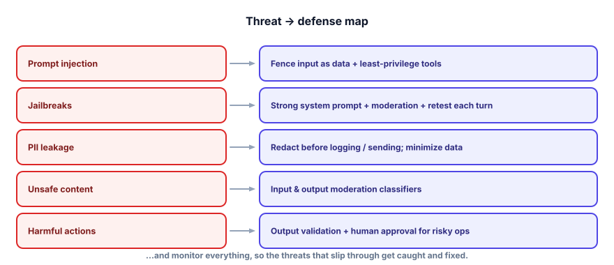

Interview check: Guardrails & Safety
Safety questions reveal whether you’d actually let your system near real users. Interviewers want a security mindset: you assume the model can be manipulated and you build trustworthy guards around it. Here’s the set.
Answer aloud first. The throughline: treat all input — and output — as untrusted; you can’t make the model safe, so make the system safe with defense in depth + least privilege; and match the depth to the risk.

The questions teams ask
“What’s different about securing an LLM app?”
▸ Strong answer
LLM apps blur the code/data line — the model treats all text as possible instructions, and much of that text is untrusted (user input, retrieved docs, tool results). Add the ability to take actions and a malicious string can become a real action. So I draw a trust boundary and treat everything entering and leaving as untrusted, then map each threat (injection, jailbreaks, PII, unsafe content, unsafe actions) to a defense. The core shift: you can’t make the model safe, so you make the system safe around it.
“What is prompt injection and how do you defend against it?”
▸ Strong answer
Untrusted text carrying instructions that override yours — direct (user message) or indirect (hidden in retrieved docs/web pages an agent reads). The model can’t separate rules from data, so it’s not fully solvable. Prompt-level help: fence untrusted text as data and instruct the model to ignore instructions within it. But the real defense is structural: least-privilege tools, human approval for risky actions, no secrets in the prompt, and output validation — so a hijacked model can’t do harm. Defend the prompt and defang the consequences.
“Jailbreak vs injection, and how do you reduce jailbreaks?”
▸ Strong answer
A jailbreak targets the model’s safety training (produce disallowed content); injection targets your app’s instructions. Reduce jailbreaks with a safety-trained model + clear system prompt, independent input/output moderation (normalizing/decoding text to defeat obfuscation), re-checking safety every turn (not just turn 1, to catch gradual escalation), plus monitoring and rate-limiting. It’s an arms race, so I red-team, fold successful attacks into a safety eval set, and assume some get through — which is why output moderation is a necessary backstop.
“How do you handle PII in an LLM app?”
▸ Strong answer
Redact PII at three boundaries — before logging/tracing, before sending to third-party model APIs, and on outputs — using regex for structured PII and a model-based detector (e.g., free Presidio) for names/addresses. Practice data minimization and retention limits, restrict access, and check provider data-handling terms (or self-host an open model for the most sensitive data). It’s a legal duty (GDPR/CCPA), and fine-tuning on personal data is risky because you can’t easily unlearn it — so I design privacy and observability together.
“Why is the model’s output a security risk, and what do you do?”
▸ Strong answer
Because output is shaped by attacker-influenceable inputs and can be malformed or malicious — feeding it into HTML, SQL, a shell, or an action causes XSS, injection, or unintended operations (insecure output handling, a top LLM risk). I treat output as untrusted: validate the schema, allowlist permitted values/actions, enforce hard limits in code (not the prompt), sanitize/escape anything rendered, and scan for leaked secrets/PII — then and only then use it. The model proposes; my code disposes.
“What does defense in depth look like for an LLM product?”
▸ Strong answer
Independent layers so one failure isn’t a breach: input moderation → hardened/fenced prompt → least-privilege tools → human approval for risky actions → output validation → output moderation → monitoring. Least privilege is the highest-leverage layer because it caps the impact of any successful injection/jailbreak. The layers must fail independently, and I match depth to risk — an internal read-only bot needs far less than a public agent that moves money.
“Design a safe public agent that can issue refunds.”
▸ Strong answer
Threat-model first (asset = money/PII; untrusted = user + any retrieved content). Then layer: input moderation; fence user text as data; least-privilege tools (only refund/reply/escalate); a hard code-level refund cap and human approval above a threshold (never trust the prompt for the limit); validate the model’s output (allowlist the action, bound the amount, sanitize text); output moderation; redact PII in logs; and monitor/rate-limit for abuse. Even a fully-hijacked model can then only request a small, human-checked refund — blast radius contained.
Rapid-fire self-check
The most important reason a refund limit must live in code, not the system prompt, is…
You can only add ONE defense to an action-taking public agent. Which gives the most protection per unit effort?
A malicious instruction arrives hidden inside a document your system retrieves. Which layer most reliably limits the damage?
What is the best defense against PII leaking to a third-party model API?
- The LLM threat model and trust boundary (input and output untrusted).
- Prompt injection (direct/indirect) and why it’s not fully solvable.
- Jailbreak vs injection; per-turn moderation; the arms race.
- PII redaction at the three boundaries; minimization; the third-party concern.
- Content moderation on both sides; using a separate safety model.
- Output validation / insecure output handling (XSS, SQL, actions).
- Defense in depth + least privilege, and matching depth to risk.
You can now ship LLM products you can trust. The last engineering concern is making them fast and cheap enough to run at scale. Next: Track 8, Serving, Latency & Cost.